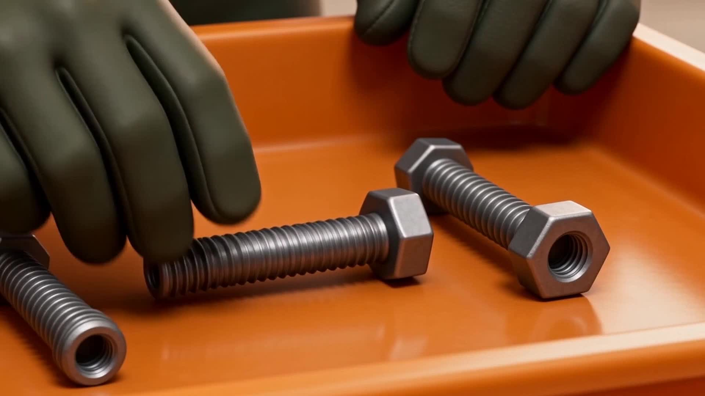
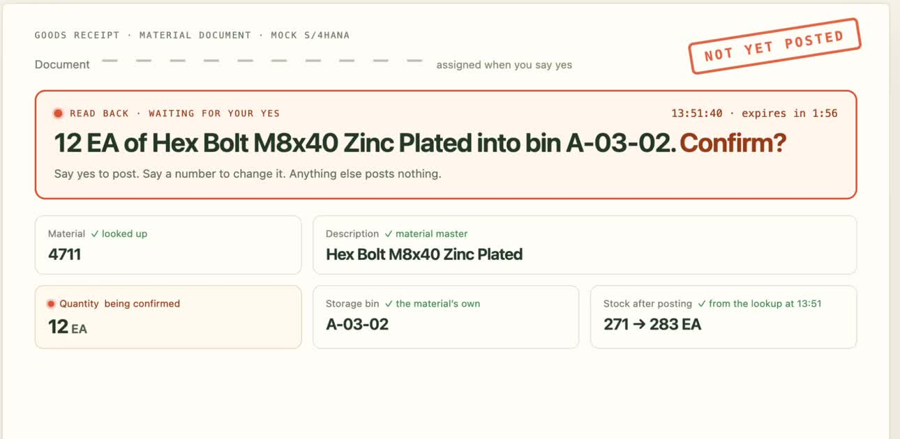
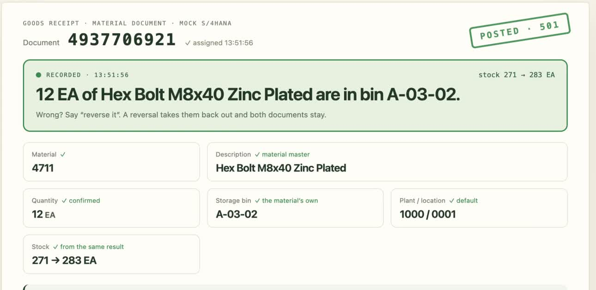

Open vocabulary, both hands on the box. The agent has no write tool yet.
The gateway looks the material up: 280 EA, hex bolt M8×40, bin A-03-02. It issues a one-use draft token, valid two minutes. Now, and only now, post_goods_receipt exists.

The read-back names quantity, unit, description and bin. The correction invalidates the draft for twenty; a new one is prepared for twelve.

Not yet posted until the spoken yes. The sentence travels with the one-use token; without both, there is no write.

Duplicate guard first: same intent in the last 120 s? Then the document. Material document 4937706921, stock 271 → 283.
The live screen shows the document and the sentence that caused it. Wrong? Say “reverse it”: a 102 against the 101, both documents stay.